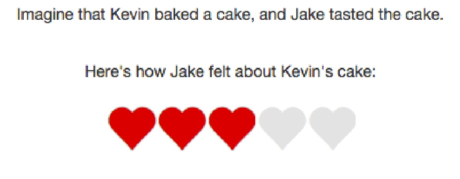

Social reasoning about social reasoning
Chapter 9: Politeness
When using language, speakers aim to get listeners to believe the things that they believe. But sometimes, we don’t want listeners to know exactly how we feel. Imagine your date bakes you a batch of flax seed, sugar-free, gluten-free cookies before your big presentation next week. (What a sweetheart.) You are grateful for them—something to take your mind off impending doom. But then you bite into them, and you wonder if they actually qualify as cookies and not just fragments of seed glued together. Your date asks you what you think. You look up and say “They’re good.”
Politeness violates a critical principle of cooperative communication: exchanging information efficiently and accurately. If information transfer were the only currency in communication, a cooperative speaker would find polite utterances undesirable because they are potentially misleading. But polite language use is critical to making sure your date doesn’t charge out of the room before you can qualify what you meant by the more truthful and informative “These cookies are terrible.”
Brown and Levinson (1987) recast the notion of a cooperative speaker as one who has both an epistemic goal to correctly update the listener’s knowledge state, as well as a social goal to minimize any potential damage to the hearer’s (and the speaker’s own) self-image, which they called face. Yoon, Tessler, et al. (2016) formalize a version of this idea in the RSA framework by introducing a new component to the speaker’s utility function: social utility.
A new speaker
The usual speaker utility from RSA is a surprisal-based, epistemic utility:
Social utility can be defined as the expected subjective utility of the state the listener would infer given the utterance :
where is a value function that maps states to subjective utility values — this captures the affective consequences for the listener of being in state .
Speaker utility is then a mixture of these components:
Note that at this point, we do not differentiate subjective state value to the listener from subjective state value to the speaker, though in many situations these could in principle be different. Also at this point, we do not allow for deception or meanness, which would be the exact opposite of epistemic and social utilities, respectively — though this could very naturally be incorporated. (In reft:yoonetal2016, they do investigate meanness by having independent weights on the two utilities. For simplicity, we adopt the notation of reft:yoonetal2017, in which they describe utility as a simpler mixture-model.)
In WebPPL, this looks like the following:
var utility = {
epistemic: literalListener.score(state),
social: expectation(literalListener, valueFunction)
};
var speakerUtility = phi * utility.epistemic + (1 - phi) * utility.social
expectation computes the expected value (or mean) of the distribution supplied to it as the first argument.
The second argument is an optional projection function, for when you want the expectation computed with respect to some transformation of the distribution (technically: a transformation of the support of the distribution).
Here, valueFunction projects the listener’s distribution from world states onto subjective valuations of those world states (e.g., the subjective value of a listener believing the cookies they baked were rated 4.5 out of a possible 5 stars).
We consider a simplified case study of the example given at the beginning, shown in the Figure 1 below. The listener has completed some task or produced some product (e.g., baked a cake), and solicits the speaker’s feedback. Performance on the task maps to a scale ranging from 1 to 5 hearts (shown below; cf. online product reviews). These are the states of the world that the speaker can be informative with respect to. Below, the speaker thinks the cake deserves 3 out of 5 hearts.

At the same time, these states of the world also have some inherent subjective value: 5 hearts is better than 3 hearts.
phi governs how much the speaker seeks to communicate information about the state vs. make the listener believe she is a highly valued state.
We start with a literal listener whose task is to interpret value judgments (e.g., “terrible,” “okay,” “amazing”) according to their literal semantics.
var states = [1,2,3,4,5]
var utterances = ["terrible","bad","okay","good","amazing"]
// correspondence of utterances to states (empirically measured)
var literalSemantics = {
"terrible":[.95,.85,.02,.02,.02],
"bad":[.85,.95,.02,.02,.02],
"okay":[0.02,0.25,0.95,.65,.35],
"good":[.02,.05,.55,.95,.93],
"amazing":[.02,.02,.02,.65,0.95]
}
// determine whether the utterance describes the state
// by flipping a coin with the literalSemantics weight
// ... state - 1 because of 0-indexing
var meaning = function(utterance, state){
return flip(literalSemantics[utterance][state - 1]);
};
// literal listener
var listener0 = function(utterance) {
Infer({model: function(){
var state = uniformDraw(states);
var m = meaning(utterance, state);
condition(m);
return state;
}})
};
Exercise: Test the predictions of
listener0for the various utterances.
Next, we add in the speaker, who reasons about the literal listener with respect to an epistemic and a social goal.
// state prior, utterance prior, and meaning function
///fold:
var states = [1,2,3,4,5]
var utterances = ["terrible","bad","okay","good","amazing"]
// correspondence of utterances to states (empirically measured)
var literalSemantics = {
"terrible":[.95,.85,.02,.02,.02],
"bad":[.85,.95,.02,.02,.02],
"okay":[0.02,0.25,0.95,.65,.35],
"good":[.02,.05,.55,.95,.93],
"amazing":[.02,.02,.02,.65,0.95]
}
// determine whether the utterance describes the state
// by flipping a coin with the literalSemantics weight
// ... state - 1 because of 0-indexing
var meaning = function(utterance, state){
return flip(literalSemantics[utterance][state - 1]);
};
///
// value function scales social utility by a parameter lambda
var lambda = 1.25 // value taken from MAP estimate from Yoon, Tessler, et al. 2016
var valueFunction = function(s){
return lambda * s
};
// literal listener
var listener0 = function(utterance) {
Infer({model: function(){
var state = uniformDraw(states);
var m = meaning(utterance, state);
condition(m);
return state;
}})
};
var alpha = 10; // MAP estimate from Yoon, Tessler, et al. 2016
var speaker1 = function(state, phi) {
Infer({model: function(){
var utterance = uniformDraw(utterances);
var L0_posterior = listener0(utterance);
var utility = {
epistemic: L0_posterior.score(state),
social: expectation(L0_posterior, valueFunction)
};
var speakerUtility = phi * utility.epistemic +
(1 - phi) * utility.social
factor(alpha * speakerUtility)
return utterance;
}})
};
speaker1(1, 0.99)
Exercises:
- Describe the kind of speaker assumed by the above function call (
speaker(1, 0.99))?- Change the call to the speaker to make it so that it only cares about making the listener feel good.
- Change the call to the speaker to make it so that it cares about both making the listener feel good and conveying information.
- Change the value of
lambdaand examine the results.
A listener who understands politeness
If different speakers can have different weights on the mixture parameter phi, which governs the trade-off between kindness and informativity, listeners may have uncertainty about what kind of speaker they are interacting with. (Relatedly, we should be able to interpret the kindness vs. informativity behind a single utterance, for a known speaker.) This can be captured by endowing the pragmaticListener with a prior distribution over phi, corresponding to uncertainty about the parameter of the speaker’s utility function.
///fold:
var states = [1,2,3,4,5]
var utterances = ["terrible","bad","okay","good","amazing"]
// correspondence of utterances to states (empirically measured)
var literalSemantics = {
"terrible":[.95,.85,.02,.02,.02],
"bad":[.85,.95,.02,.02,.02],
"okay":[0.02,0.25,0.95,.65,.35],
"good":[.02,.05,.55,.95,.93],
"amazing":[.02,.02,.02,.65,0.95]
}
// determine whether the utterance describes the state
// by flipping a coin with the literalSemantics weight
// ... state - 1 because of 0-indexing
var meaning = function(utterance, state){
return flip(literalSemantics[utterance][state - 1]);
};
// value function scales social utility by a parameter lambda
var lambda = 1.25 // value taken from MAP estimate from Yoon, Tessler, et al. 2016
var valueFunction = function(s){
return lambda * s
};
// literal listener
var listener0 = cache(function(utterance) {
Infer({model: function(){
var state = uniformDraw(states);
var m = meaning(utterance, state);
condition(m);
return state;
}})
});
var alpha = 10; // MAP estimate from Yoon, Tessler, et al. 2016
var speaker1 = cache(function(state, phi) {
Infer({model: function(){
var utterance = uniformDraw(utterances);
var L0_posterior = listener0(utterance);
var utility = {
epistemic: L0_posterior.score(state),
social: expectation(L0_posterior, valueFunction)
};
var speakerUtility = phi * utility.epistemic +
(1 - phi) * utility.social
factor(alpha * speakerUtility);
return utterance;
}})
});
///
var pragmaticListener = function(utterance) {
Infer({model: function(){
var state = uniformDraw(states)
var phi = uniformDraw([0.1, 0.3, 0.5, 0.7, 0.9])
var S1 = speaker1(state, phi)
observe(S1, utterance)
return { state, phi }
}})
}
var listenerPosterior = pragmaticListener("good")
display("expected state = " +
expectation(marginalize(listenerPosterior, "state")))
viz(marginalize(listenerPosterior, "state"))
display("expected phi = " +
expectation(marginalize(listenerPosterior, "phi")))
viz.density(marginalize(listenerPosterior, "phi"))
Above, we have a listener who hears that they did “good” and infers how well they actually did, as well as how much the speaker values honesty vs. kindness.
Exercises:
- Examine the marginal posteriors on
state. Does this make sense? Compare it to what theliteralListenerwould believe upon hearing the same utterance.- Examine the marginal posterior on
phi. Does this make sense? Consider a different utterance: wouldpragmaticListenerinfer something different aboutphi? Test your intuitions by running that utterance through thepragmaticListener.- In Yoon, Tessler, et al. (2016), the authors ran an experiment testing participants’ intuitions as to the kind of speaker they were dealing with (i.e., inferred
phi). ModifypragmaticListenerso that she knows the speaker (a) wants the listener to feel good, (b) wants to convey information to the listener, and (c) both, and test the models on the utterance “good”.- The authors also ran an experiment testing participants’ intuitions if they knew what state of the world they were in. Modify
pragmaticListenerso that she knows what state of the world she is in. Come up with your own interesting situations (i.e., choose a state and an utterance) and show the model predictions. Are the predictions in accord with your intuitions? Why or why not?
Politeness with indirect speech acts
Above, we modeled the case study of white lies, utterances which are used to convey misleading information for purposes of politeness. There are other ways to be polite, however. Speakers may be deliberately indirect for considerations of politeness. Consider a listener who just gave an objectively terrible presentation. They look fragile as they come to you for your feedback. You tell them “It wasn’t amazing.”
Why would somebody produce such an indirect speech act? If the speaker wanted to actually be nice, they would say “It was fine.” or “It was great.” If the speaker wanted to actually convey information, they would say “It was terrible.” reft:yoonetal2017 hypothesize that speakers produce indirect speech acts in order to appear to care both about conveying information and saving the listener’s face. Can we elaborate the model above to account for politeness by being indirect? First, we will have to consider a speaker model, who produces utterances that can be understand as polite.
var speaker2 = function(state, phi) {
Infer({model: function(){
var utterance = sample(utterancePrior)
var L1 = pragmaticListener(utterance)
factor(alpha2 * L1.score({state, phi}))
return utterance
}})
}
The pragmaticListener model is the one defined in the case study above, a listener who reasons both about the true state and the speaker’s goals (specifically, phi). Now, we have a speaker (speaker2) who produces utterances in order to get the pragmatic listener to believe a certain true state and phi. That is, the above speaker has a “self-presentational” goal.
To look at indirectness, we will add utterances with negation, which are indirect insofar as they convey less information than their positive form (e.g., “not amazing” is potentially true of 1 - 4 hearts).
///fold:
// helper function split utterances at "_" to find negation
var isNegation = function(utt){
return (utt.split("_")[0] == "not")
};
var reshapeUtt = function(utt){
return {
negation: (utt.split("_")[0] == "not") ? "not": "",
adjective: utt.split("_")[1]
}
};
// helper function to round
var round = function(x){
return Math.round(x * 100) / 100
}
// possible utterances (both positive and negative)
var utterances = [
"yes_terrible","yes_bad","yes_okay","yes_good","yes_amazing",
"not_terrible","not_bad","not_okay","not_good","not_amazing"
];
// utterance costs (negative utterance more expensive)
var cost_yes = 0;
var cost_neg = 1;
var uttCosts = map(function(u) {
return isNegation(u) ? Math.exp(-cost_neg) : Math.exp(-cost_yes)
}, utterances)
// utterance prior
var utterancePrior = Infer({model: function(){
return categorical({
vs: utterances,
ps: uttCosts
})
}});
// taken from literal semantics expt
var literalSemantics = {
"not_amazing": [0.9925, 0.9186, 0.7876, 0.2321, 0.042],
"not_bad": [0.0075, 0.2897, 0.8514, 0.8694, 0.8483],
"not_good": [0.9926, 0.8871, 0.1582, 0.0073, 0.0081],
"not_okay": [0.9198, 0.7652, 0.1063, 0.0074, 0.1192],
"not_terrible": [0.0415, 0.4363, 0.9588, 0.9225, 0.9116],
"yes_amazing": [0.0077, 0.0077, 0.0426, 0.675, 0.9919],
"yes_bad": [0.9921, 0.9574, 0.0078, 0.0078, 0.0079],
"yes_good": [0.008, 0.0408, 0.8279, 0.9914, 0.993],
"yes_okay": [0.0078, 0.286, 0.9619, 0.7776, 0.6122],
"yes_terrible": [0.9593, 0.5217, 0.0753, 0.008, 0.044]
};
var meaning = function(words, state){
return flip(literalSemantics[words][state - 1]);
};
// value function scales social utility by a parameter lambda
var lambda = 1.25 // value taken from MAP estimate from Yoon, Tessler, et al. 2016
var valueFunction = function(s){
return lambda * s
};
// possible states of the world (cf. Yelp reviews)
var states = [1,2,3,4,5];
// info for epistemic vs. social utility prior;
// 1 corresponds to fully favoring epistemic utility
var weightBins = map(round, _.range(0,1, 0.05))
// literal listener
var literalListener = cache(function(utterance) {
Infer({model: function(){
var state = uniformDraw(states)
var m = meaning(utterance, state)
condition(m)
return state
}})
})
var alpha = 10; // MAP estimate from Yoon, Tessler, et al. 2016
var speaker1 = cache(function(state, phi) {
Infer({model: function(){
var utterance = sample(utterancePrior)
var L0_posterior = literalListener(utterance)
var utility = {
epistemic: L0_posterior.score(state),
social: expectation(L0_posterior, valueFunction)
};
var speakerUtility = phi * utility.epistemic +
(1 - phi) * utility.social
factor(alpha * speakerUtility)
return utterance;
}})
});
///
// pragmatic listener
// infers the state and the speaker's goals (i.e., phi)
var pragmaticListener = cache(function(utterance) {
Infer({model: function(){
var state = uniformDraw(states)
var phi = uniformDraw(weightBins)
var S1 = speaker1(state, phi)
observe(S1, utterance)
return { state, phi }
}})
}, 10000);
var alpha2 = 1;
var speaker2 = function(state, phi) {
Infer({model: function(){
var utterance = sample(utterancePrior)
var L1 = pragmaticListener(utterance)
factor(alpha2 * L1.score({state, phi}))
return reshapeUtt(utterance)
}})
}
display("speaker thinks 1 heart, tries to appear nice")
var s2_nice = speaker2(1, 0.05)
viz(s2_nice)
display("speaker thinks 1 heart, tries to appear informative")
var s2_informative = speaker2(1, 0.95)
viz(s2_informative)
display("speaker thinks 1 heart, tries to appear both nice and informative")
var s2_both = speaker2(1, 0.5)
viz(s2_both)
Exercises:
- What does the pragmatic listener infer when she hears “not amazing”? How does the pragmatic listener interpret the other “indirect” utterances?
- Write a purely informative
speaker2, who only cares about conveying the “state”, but knows that the pragmatic listener will reason about both phi and state. Does it make different predictions from the model defined above?- Write a purely self-presentational
speaker2, who only cares about conveying “phi”, but knows that the pragmatic listener will reason about both phi and state. Does it make different predictions from the model defined above?- Write an alternative
speaker2who, likespeaker1, is actually both kind and informative (as opposed to the self-presentational speaker model above). Does it make different predictions from the model defined above?
Table of Contents